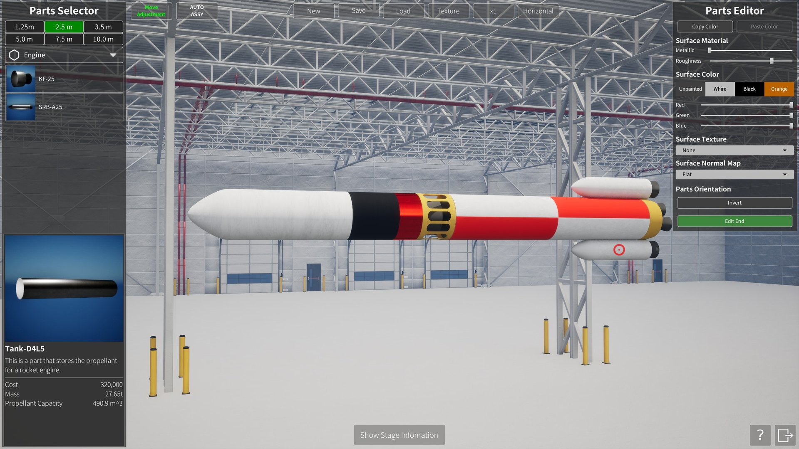

1. はじめに
『Keplerian Space Discovery』は、実在の太陽系と世界各地の実在する射場を舞台に、ロケットの組み立て・打ち上げ・軌道投入を行う宇宙飛行シミュレーションゲームです。天体と宇宙機の運動はケプラー軌道力学に基づいて計算されます。
（準備中：ゲーム概要・動作環境・このマニュアルの読み方）
2. クイックスタート：初めての打ち上げ
まずは1機、軌道に乗せてみましょう。この章では最短の手順だけを説明します。各画面・各操作の詳しい説明は後の章を参照してください。
（準備中：射場を選ぶ → 機体を選ぶ → 打ち上げ → 軌道投入確認、の流れをスクリーンショット付きで）
3. メインスクリーン

Object Selector
画面左側の項目をマウス左クリックすることで、注目選択の切り替えを行うことができます。
マウス中ボタンクリックで、対象をターゲットすることができます。
Time Controls
・高度1km以上から時間加速を行うことができます。
・"||" は時間停止、"▶" は等倍速、"▶▶" は×2倍、"▶▶▶" は×10倍となります。
・"▶▶"、"▶▶▶" は続けて押すことで、効果を重ねることができます。例えば "▶▶" を3回押すと、×8倍になります。
・状況ごとの倍率上限など、詳しいルールは「時間加速のルール」を参照してください。
宇宙機操作パネル
（準備中）
選択オブジェクト情報
（準備中）
追跡オブジェクト情報
（準備中）
Filter
（準備中）
Camera Controls
（準備中）
NavBall の見方
（準備中：Prograde / Retrograde 等のマーカーの意味。打ち上げ中は対気基準、軌道上は慣性基準に切り替わること）
Map View
（準備中）
SOI 表示
（準備中）
4. Vehicle Assembly Building（ロケット組み立て工場）
Vehicle Assembly Building（VAB）では、パーツを組み合わせて自分だけのロケットを設計・保存できます。

基本操作
・画面左の Parts Selector から、配置したいパーツをマウス左クリックで選びます。
・クリックしたらボタンを離し、マウスを動かして配置したい位置までドラッグします（クリックしたまま動かすのではありません）。
・目的の位置で再度クリックすると、その位置にパーツが確定配置されます。
・すでに配置されているパーツの近くに配置しようとすると、スナップして自動的に接続されます。
Parts Selector 上部の直径タブ（1.25m / 2.5m / 3.5m / 5.0m / 7.5m / 10.0m）を切り替えると、その直径に対応するパーツだけが一覧に表示されます。また、その下のプルダウン（Engine など）を切り替えることで、Tank・Fairing といったパーツ種別を切り替えられます。
上部ツールバー
| ボタン | 説明 |
|---|---|
| Move Adjustment （トグル） |
パーツをドラッグで移動させるときの、奥方向の距離の扱いを切り替えます。通常（OFF）は、パーツは掴んだときの奥方向の距離を保ったまま画面に沿って動きます。ONにすると、パーツの奥方向の距離が機体の中心軸上に揃えられた状態で移動するようになり、奥まった位置にあるパーツを機体中心付近へ寄せ直す操作がしやすくなります。 |
| AUTO ASSY （トグル） |
ONの時は、パーツをクリックすると、今置かれているパーツの左側に自動で配置されます（最初のパーツは原点に配置されます）。OFFの時は、クリック後に自分でマウスドラッグして配置場所を決めます（上記の基本操作の通り）。 |
| New | 現在配置されているパーツをすべて削除し、新しいロケットの組み立てを開始します。 |
| Save | 組み立て中のロケットを保存します。 |
| Load | 保存したロケットを呼び出します。 |
| Texture | ロケットに貼り付ける画像（カスタムテクスチャ）を管理するダイアログを開きます。プレイヤーが自作した画像を登録しておき、閲覧・削除・追加ができます。 |
| x1 / x2 / x3 / x4 | パーツを対称に複数配置する数を切り替えます。ブースターなど側面パーツの配置に使います。x2以上に設定した状態で、貼り付け先パーツの側面にパーツを配置すると、貼り付け先パーツの前方ベクトルを軸に、線対称（放射状）に複数個同時配置されます。 |
| Horizontal / Vertical （トグル） |
組み立て中のロケットの表示向きを切り替えます。Horizontalで水平配置、Verticalで垂直配置になります。 |
Parts Editor
（準備中：右側パネルの各項目〈Surface Material・Surface Color・Surface Texture・Surface Normal Map・Parts Orientation〉の説明）
5. 打ち上げと飛行
自動打ち上げ
打ち上げは、目標軌道を指定するだけで軌道投入まで自動で行われます。シーケンスは実際のロケットと同じ流れで進みます。
| フェーズ | 内容 |
|---|---|
| 1. リフトオフ | エンジン点火。推力が機体重量を上回った瞬間に発射台を離れます。 |
| 2. 垂直上昇 | 高度約1kmまでまっすぐ上昇します。 |
| 3. ロール（方位角合わせ） | 機体をロールさせ、打ち上げ方位角に機体の向きを合わせます。 |
| 4. 重力ターン | 高度が上がるにつれて機体を徐々に倒し、水平方向への加速に移っていきます。 |
| 5. 遠点調整・MECO | 遠点（Ap）が目標高度に達したらメインエンジンをカットし、続いて段分離を行います。 |
| 6. 慣性飛行 | 遠点付近まで惰性で上昇します。この間は時間加速が自動で入り、再点火が近づくと自動で等倍に戻ります。 |
| 7. 再点火・近点調整 | 遠点の少し手前でエンジンを再点火し、近点（Pe）を目標高度まで持ち上げて軌道を円くします。 |
| 8. 軌道投入完了 | 近点が目標高度に達したらエンジンカット。打ち上げシーケンス終了です。 |
このほか、飛行中には次のイベントが自動で実行されます。
・ブースター分離 … ブースターの推進剤を使い切ったタイミングで分離します。
・フェアリング分離 … 大気圏を抜けた高度100km付近で分離します。
自動打ち上げ中も、時間加速の変更やカメラ操作は自由に行えます。分離や再点火などの見どころの直前には、時間加速は自動的に等倍へ戻ります。
手動操縦
宇宙機を選択して操縦モードにすると、キーボードで直接操縦できます。
| 操作 | キー | 説明 |
|---|---|---|
| スロットル増減 | Left Shift / Left Ctrl | 推力を少しずつ上げ下げします。 |
| スロットル最大 | Z | 推力を一気に100%にします。 |
| スロットルカット | X | 推力を0にします（エンジンカット）。 |
| ピッチ | W / S | 機首を上下に向けます。 |
| ヨー | A / D | 機首を左右に向けます。 |
| ロール | Q / E | 機体軸まわりに回転させます。 |
| ステージ分離 | Space | 次のステージを切り離します。 |
姿勢変更の応答は機体の慣性モーメントと推力によって決まります。重い機体や推力の小さい上段では、姿勢がゆっくりとしか変わらない点に注意してください。
SAS（姿勢自動保持）
SAS を使うと、指定した方向へ機体の姿勢を自動で向け続けることができます。以下のモードがあります。
| モード | 向く方向 |
|---|---|
| Prograde（順行） | 進行方向。加速して軌道を上げるときに使います。 |
| Retrograde（逆行） | 進行方向の反対。減速して軌道を下げるときに使います。 |
| Normal（法線） | 軌道面に垂直な方向。軌道傾斜角を変えるときに使います。 |
| Antinormal（反法線） | Normal の反対方向。 |
| Zenith（天頂） | 親天体の中心から遠ざかる方向（真上）。 |
| Nadir（天底） | 親天体の中心へ向かう方向（真下）。 |
| Target | ターゲットに指定したオブジェクトの方向。 |
| Antitarget | ターゲットの反対方向。 |
| Maneuver | 設定したマニューバの噴射方向。 |
Prograde / Retrograde などの速度基準の方向は、軌道投入前は対気速度（大気に対する速度）基準、軌道投入後は慣性速度基準に自動で切り替わります。これは NavBall のマーカー表示と常に一致します。
時間加速のルール
時間加速の上限は、選択中の宇宙機の高度と飛行状態によって自動的に決まります。
| 状態 | 上限倍率 |
|---|---|
| 高度1km未満 | ×1（等倍のみ） |
| 高度1km〜大気圏内、またはエンジン噴射中 | ×4まで |
| 大気圏を十分に離れ、噴射していないとき | 軌道周期に応じて自動算出（およそ10秒で軌道を1周する倍率まで） |
・上限を超える倍率を設定していた場合は、自動的に上限まで引き下げられます。
・自動打ち上げ中は、フェーズに応じた倍率が自動で設定されます（重力ターン中×2、遠点調整中×4、慣性飛行中は最大×60など）。手動で倍率を変更した場合はそちらが優先されます。
・ステージ分離・フェアリング分離・再点火などの直前には、見逃さないよう自動的に等倍へ戻ります。
6. 契約
（準備中：契約の受け方、種類、報酬）
7. 軌道の基礎知識
ケプラー軌道要素
宇宙機や天体の軌道は、6つの数値の組「ケプラー軌道要素」で表されます。このゲームのタイトルの由来であり、ゲーム内のあらゆる軌道情報の基礎です。6つの要素は、役割ごとに3つのグループに分けると理解しやすくなります。
| 要素 | 意味 |
|---|---|
| 軌道の形と大きさ | |
| 軌道長半径 a (Semi-major Axis) |
軌道の大きさ。楕円の長い方の径の半分です。値が大きいほど高い軌道になり、公転周期もこの値で決まります。 |
| 離心率 e (Eccentricity) |
軌道のつぶれ具合。0 で完全な円、0〜1 で楕円になります。1 以上になると軌道は閉じず、親天体の重力圏から脱出していきます。 |
| 軌道面の向き | |
| 軌道傾斜角 i (Inclination) |
赤道面に対する軌道面の傾き。0°は赤道上空を回る軌道、90°は北極・南極の上空を通る極軌道です。90°を超えると、天体の自転と逆向きに回る逆行軌道になります。 |
| 昇交点経度 Ω (Longitude of the Ascending Node) |
軌道が赤道面を南から北へ横切る点（昇交点）が、基準方向から測ってどの方角にあるか。傾いた軌道面がどちらを向いているかを決めます。 |
| 近点引数 ω (Argument of Periapsis) |
昇交点から軌道に沿って測って、近点がどの位置に来るか。軌道面の中での楕円の向きを決めます。 |
| 軌道上の位置 | |
| 平均近点角 M (Mean Anomaly) |
軌道1周のうち、今どこにいるかを表す角度。時間とともに一定の割合で増えていき、360°で1周です。 |
・遠点（Ap）・近点（Pe）の高度は、軌道長半径 a と離心率 e から決まります。自動打ち上げの目標軌道も遠点・近点高度で指定します。
・打ち上げでそのまま入れられる軌道傾斜角は、射場の緯度が下限です。低緯度の射場ほど狙える軌道の自由度が高くなります。
・東向きの打ち上げでは天体の自転速度がそのまま加速のボーナスになります（地球の赤道で約465 m/s）。多くの射場が東側に海が開けた場所にあるのはこのためです。
軌道線の見方
画面には2種類の軌道線が表示されます。
・予定軌道 … 現在の位置と速度から計算した、これから飛ぶ経路。エンジン噴射中は加速に合わせて刻々と形が変わります。
・実績軌道 … 実際に通ってきた経路の記録（飛行の軌跡）。
軌道線の表示のしかたは、飛行の状態によって自動的に切り替わります。
| 状態 | 表示のしかた |
|---|---|
| 打ち上げ中・弾道飛行中 （軌道投入前） |
地面に固定した表示。軌跡の根元は発射台に留まり続け、天体の自転を含めた対地の経路（このまま飛ぶとどこに落ちるか）が読み取れます。 |
| 軌道投入後 | 慣性空間に固定した表示。天体の自転に関係なく、軌道そのものの形（楕円）が表示されます。 |
切り替わるタイミングは「近点高度が大気圏界面（カーマンライン）を超えたとき」で、これは軌道投入の判定と同じです。NavBall の Prograde などのマーカーの基準も、これと同時に対気基準から慣性基準へ切り替わります。
（準備中：軌道線・マーカーの色分けの凡例。スクリーンショットとあわせて掲載予定）
8. リファレンス
Control Keys
| Control | Keyboard | Mouse | Game Pad |
|---|---|---|---|
| Camera Rotation | I/K/J/L | RMB+Drag | Right thumbstick |
| Camera Move | - | MMB+Drag | - |
| Camera Dolly | Home/End | Wheel | L/R Trigger |
| Camera Zoom | Page Up/Down | - | - |
| Camera ExpComp | Insert/Delete | - | - |
| Camera Mode Change | V | MMB+RMB | Back button |
| Camera Orientation *1 | - | LMB+Drag | - |
| Camera Roll *1 | Q/E | - | L/R Shoulder |
| Camera Reset | - | LMB+RMB | Right thumbstick Btn |
| Map view | M | - | - |
| UI Show/Hide | F2 | - | - |
| SOI Show/Hide | F3 | - | - |
| Quick Save | F5 | - | - |
| Quick Load | F9 | - | - |
| Start Tracking | O | RMB on the list | Y button |
| Open Menu | ESC | - | Start button |
| Control Panel Open *2 | C | - | X button |
| Throttle Max *3 | Z | - | - |
| Throttle Min *3 | X | - | - |
| Throttle Up *3 | Left Shift | - | - |
| Throttle Down *3 | Left Ctrl | - | - |
| Stage Separation *3 | Space | - | - |
| Roll *3 | Q/E | - | - |
| Pitch *3 | W/S | - | - |
| Yaw *3 | A/D | - | - |
| Debug Console | ALT + F12 | - | - |
*1 : カメラモードが「Chase」以外のとき。
*2 : 宇宙機を選択しているときのみ。
*3 : 宇宙機操縦モードのときのみ。
射場一覧
（準備中：ゲーム内の全射場を名称・国／地域・緯度とともに一覧表で）
用語集
（準備中）